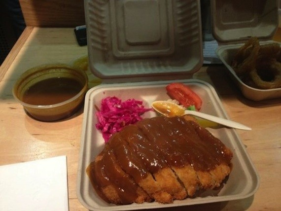

Best Curry
-

Muracci's Japanese Curry & Grill
Widely known as the best Japanese curry in SF. This is a small location thats main focus is to provide curry to go for FiDi lunch crowd. Be careful that you check their hours in advance as they close early and on the weekends.
Muracci's Website -

HRD
This SoMa joint doesn't specialize in Japanese food, but Asian Fusion. That doesn't stop it from having one of the best katsu curries in town. Seating is limited, but there is a park near by that is a great place to eat and relax.
HRD's Website -

On the Bridge
Does let the strange Yoshyoku (Japanese version of western food) menu scare you away. The food is really good and the curry can be made any way you like it with extra veggies or spice!
On the Bridge's Website
Below is a list of some of the best Japanese food SF. The list is not exhaustive, so please submit suggestions for additions to the list in the form below!